Centro Cash order app accompagna l’agente dalla creazione dell’ordine alla verifica e alla gestione delle informazioni sul cliente.
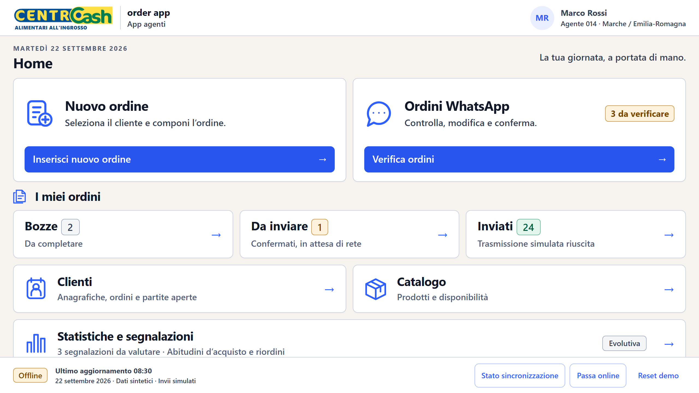
Ricerca per nome o codice, catalogo e disponibilità, quantità e unità di misura: il carrello si costruisce progressivamente.
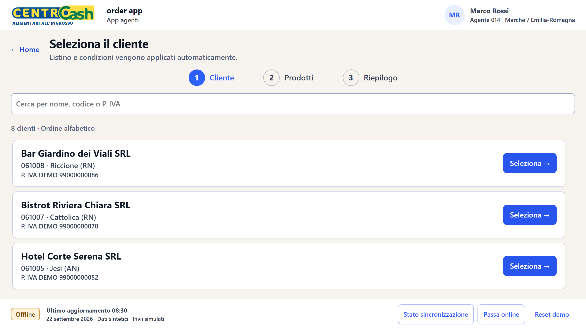
Nome, codice o P. IVA: listino e condizioni seguono la scelta.
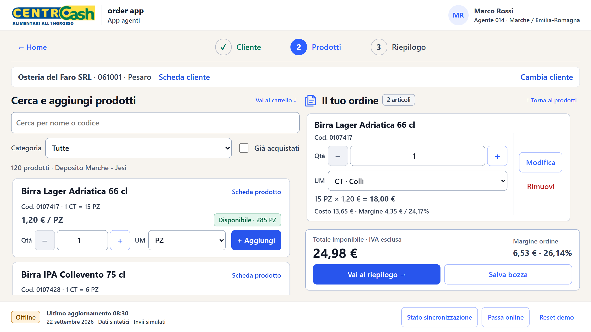
Ricerca, filtri, disponibilità, UM e carrello condiviso.
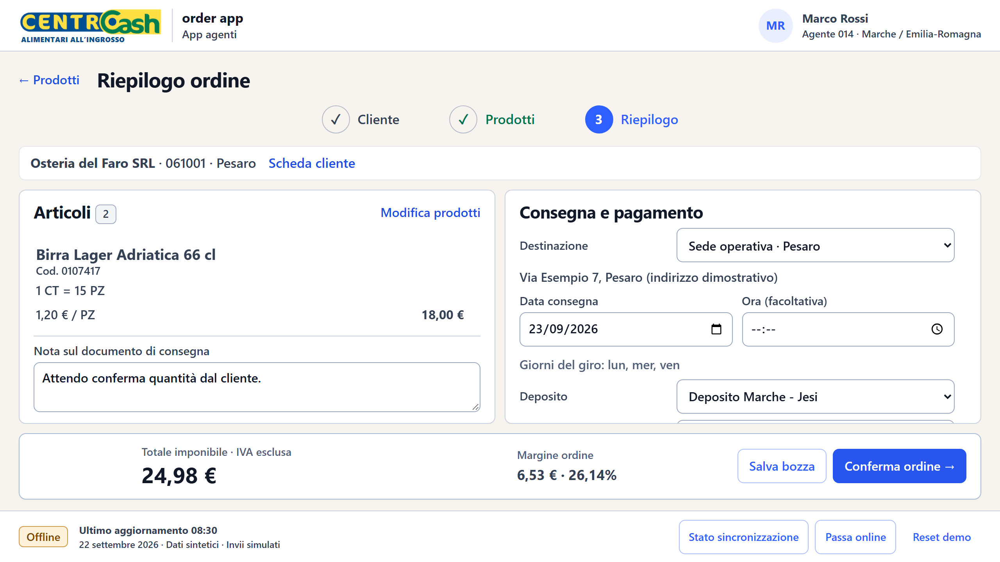
Consegna, deposito, pagamento, nota e totale.
L’agente può lavorare su quantità, unità, listino, prezzo libero, sconto e commento, vedendo subito imponibile e margine.
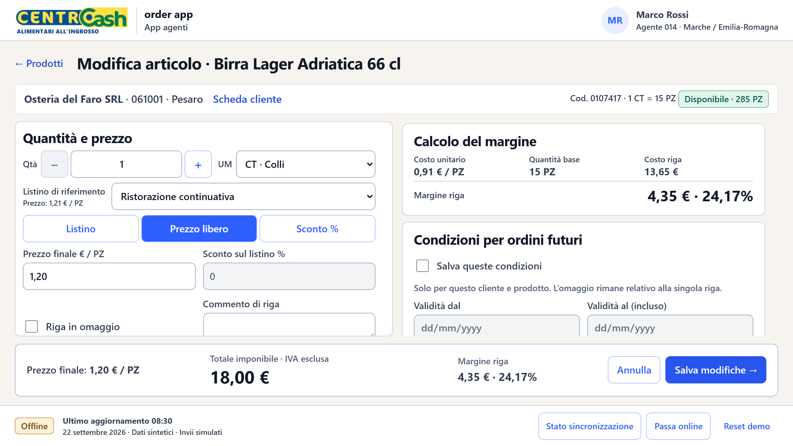
Il totale della riga e il margine si aggiornano mentre l’agente modifica le condizioni.
Una condizione ricorrente può essere salvata per quel cliente e prodotto, con date inclusive.
Le righe riconosciute entrano nella bozza; l’agente si concentra sulle eccezioni e poi usa lo stesso riepilogo dell’ordine manuale.
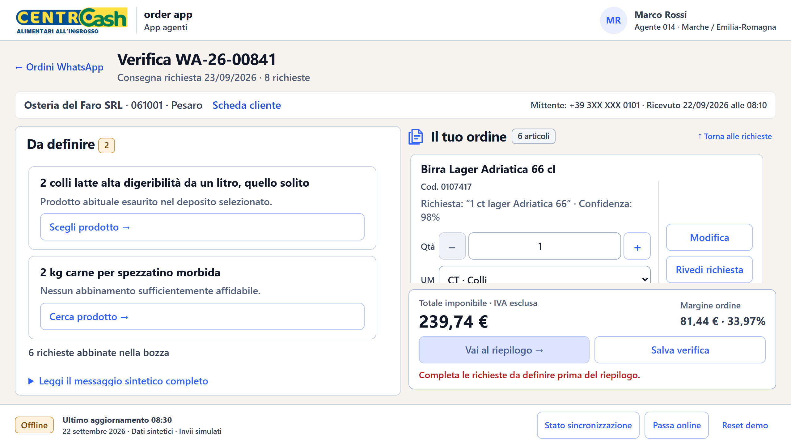
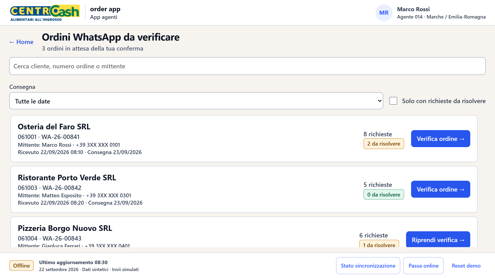
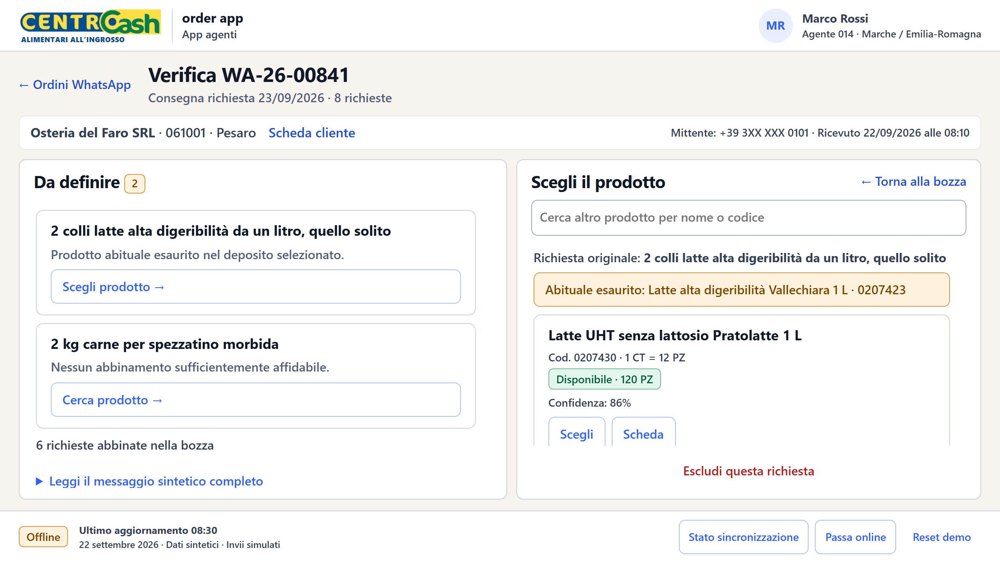
Prodotto abituale esaurito, descrizione ambigua, quantità o UM da confermare. La confidenza indica la qualità dell’associazione prodotto.
Frequenza, spesa, valore medio, categorie e prodotti abituali vengono letti insieme, così l’agente vede il cambiamento nel suo contesto.
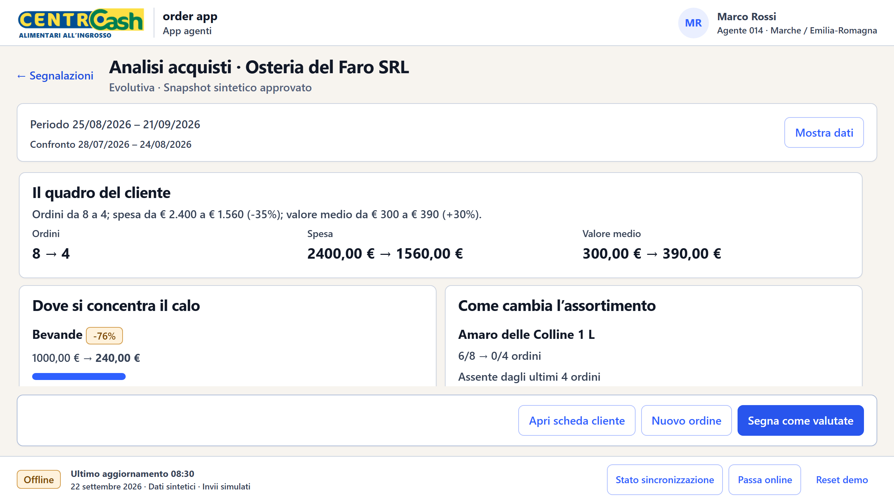
Gli ordini sono meno frequenti, mentre il valore medio sale. La composizione degli ordini spiega meglio il segnale.
Nel caso sintetico, la categoria bevande registra −76% e un prodotto abituale non compare negli ultimi ordini.
L’app attira l’attenzione su ordini meno frequenti, prodotti assenti e cambiamenti nel mix. L’agente valuta le ipotesi prima dell’ordine successivo.
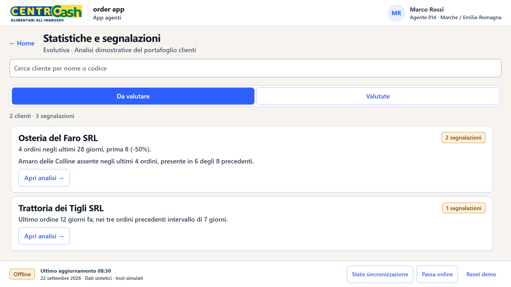
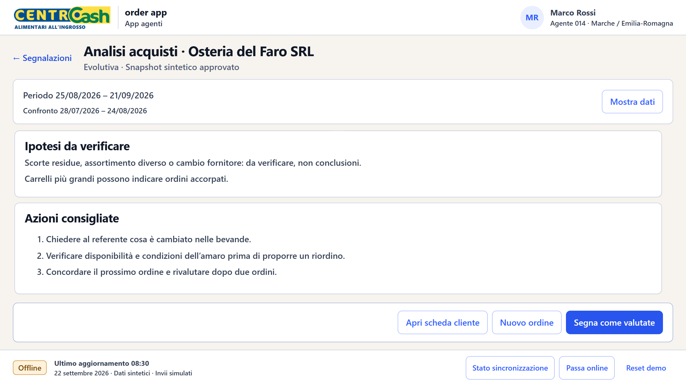
Bozze e ordini inviati, anagrafica e partite aperte, catalogo e segnalazioni accompagnano la creazione dell’ordine.
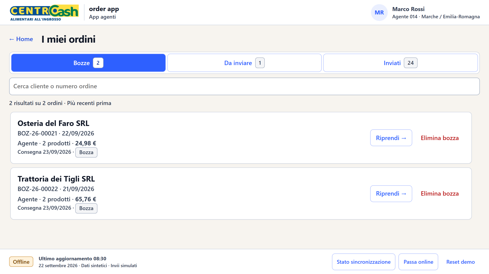
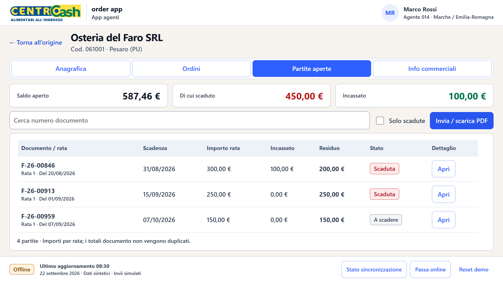
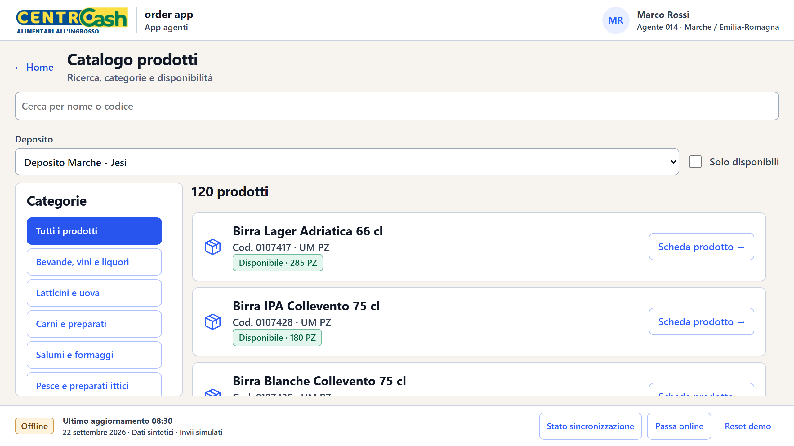